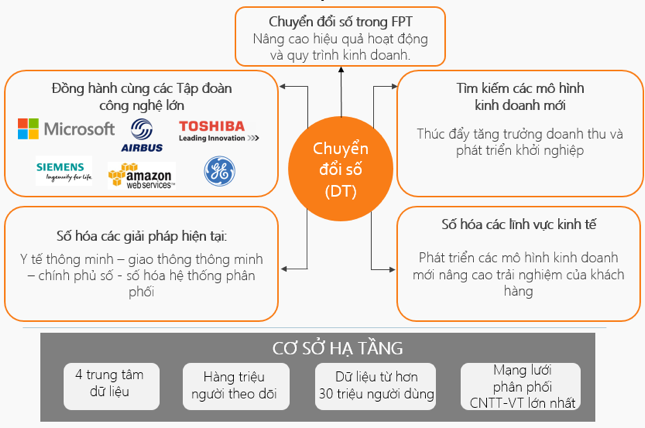

Tập đoàn FPT
Năm 1988, 13 nhà khoa học trẻ thành lập Công ty FPT với mong muốn xây dựng “một tổ chức kiểu mới, giàu
mạnh bằng nỗ lực lao động sáng tạo trong khoa học kỹ thuật và công nghệ, làm khách hàng hài lòng, góp
phần hưng thịnh quốc gia, đem lại cho mỗi thành viên của mình điều kiện phát triển đầy đủ nhất về tài
năng và một cuộc sống đầy đủ về vật chất, phong phú về tinh thần.”
Không ngừng đổi mới, liên tục sáng tạo và luôn tiên phong mang lại cho khách hàng các sản phẩm/ giải
pháp/ dịch vụ công nghệ tối ưu nhất, FPT trở thành công ty CNTT-VT lớn nhất trong khu vực kinh tế tư
nhân của Việt Nam với gần 29.000 cán bộ nhân viên, trong đó có 17.728 nhân lực công nghệ; hệ thống 48
chi nhánh, văn phòng tại 26 quốc gia và vùng lãnh thổ bên ngoài Việt Nam. FPT cũng là doanh nghiệp dẫn
đầu trong các lĩnh vực: Xuất khẩu phần mềm, Tích hợp hệ thống; Phát triển phần mềm; Dịch vụ CNTT.
Trong 32 năm qua, FPT không chỉ tiên phong xây dựng, phát triển các phần mềm thương hiệu Việt; đưa công
nghệ vào cuộc sống; hiện đại hóa các ngành kinh tế xương sống của quốc gia; đẩy mạnh giáo dục & đào tạo
thế hệ trẻ theo hướng thực học, thực nghiệp, mà còn tiên phong trong lĩnh vực xuất khẩu phẩn mềm, góp
phần đưa trí tuệ Việt Nam ra thế giới. Trong nước, hầu hết các hệ thống thông tin lớn trong các cơ quan
nhà nước và các ngành kinh tế trọng điểm của Việt Nam đều do FPT xây dựng và phát triển.
Trong cuộc cách mạng 4.0, FPT là công ty Việt Nam tiên phong trong việc nghiên cứu và phát triển các
công nghệ mới về trí tuệ nhân tạo, dữ liệu lớn, điện toán đám mây, di động,… FPT cũng là doanh nghiệp
tiên phong đồng hành cùng với các tập đoàn công nghệ hàng đầu thế giới để tạo nên các nền tảng công nghệ
số tiên tiến nhất như GE (Predix), Siemens (MindSphere), Airbus (Skywise), Amazon AWS…
Vị thế của FPT trên toàn cầu đã được công nhận và khẳng định thông qua danh sách khách hàng gồm hơn 600
doanh nghiệp lớn trên thế giới, đặc biệt trong đó có gần 100 khách hàng nằm trong danh sách Fortune 500.
Một số tên tuổi khách hàng lớn có thể kể đến Toshiba, Hitachi, Airbus, Deutsche Bank, Unilever,
Panasonic… …
Với định hướng tiên phong nghiên cứu và ứng dụng các xu hướng công nghệ mới nhất, FPT sẽ tiếp tục là đơn
vị đi đầu về chuyển đổi số cho khách hàng, đưa các công nghệ mới như AI, Big Data, IoT,… vào các giải
pháp trong mọi lĩnh vực như giao thông thông minh, y tế thông minh, chính phủ số, … FPT đặt mục tiêu
doanh thu từ thị trường nước ngoài đạt 1 tỷ USD và trở thành Tập đoàn toàn cầu hàng đầu Việt Nam về dịch
vụ thông minh vào năm 2020.
- Số CBNV: 30.651 người
- Số nhân lực khối công nghệ: 17.728
- Hiện diện: 48 văn phòng, chi nhánh tại 26 quốc gia và vùng lãnh thổ bên ngoài Việt Nam
- Doanh thu 2020: 29.830 tỷ đồng (khoảng 1,3 tỷ USD)
- Giá trị vốn hóa: 63.000+ VNĐ (khoảng 2,7 tỷ USD)
- Số nhân lực khối công nghệ: 17.728
- Hiện diện: 48 văn phòng, chi nhánh tại 26 quốc gia và vùng lãnh thổ bên ngoài Việt Nam
- Doanh thu 2020: 29.830 tỷ đồng (khoảng 1,3 tỷ USD)
- Giá trị vốn hóa: 63.000+ VNĐ (khoảng 2,7 tỷ USD)
Văn hóa FPT được gói gọn trong 6 chữ ‘TÔN ĐỔI ĐỒNG – CHÍ GƯƠNG SÁNG’, trong đó: “TÔN ĐỔI ĐỒNG” nghĩa là
“Tôn trọng cá nhân – Tinh thần đổi mới – Tinh thần đồng đội”, là những giá trị mà tất cả người FPT đều
chia sẻ.
“CHÍ GƯƠNG SÁNG” nghĩa là “Chí công – Gương mẫu – Sáng suốt”, là những phẩm chất cần có của lãnh đạo
FPT.
Trong bối cảnh cả thế giới đang bước vào cuộc Cách mạng công nghiệp lần thứ 4 – cuộc cách mạng số, FPT
sẽ là người cùng tiên phong trong xu hướng số hoá thông qua việc xây dựng, ứng dụng và chuyển đối chính
mình, không chỉ cải tiến mà còn mang lại những công nghệ với nhiều ứng dụng mới, có khả năng áp dụng
thực tiễn cao, mang lại hiệu quả sản xuất kinh doanh cũng như trải nghiệm mới cho khách hàng, từ đó cùng
bắt kịp và cùng phát triển trong thế giới số.
CHIẾN LƯỢC PHÁT TRIỂN
- Chú trọng đầu tư vào các công nghệ, sản phẩm, dịch vụ, hạ tầng kinh doanh được phát triển trên nền tảng SMAC, IoT và Digital transformation.
- Tăng cường đầu tư, nâng cao chất lượng đội ngũ chuyên gia công nghệ, xây dựng môi trường làm việc đầy sáng tạo và hiệu quả.
- Hướng tới phát triển các hoạt động dành cho cộng đồng công nghệ, từ đó xây dựng hệ sinh thái công nghệ bền vững.
HÀNH ĐỘNG
- FPT chú trọng phát triển nền tảng công nghệ, nâng cao hệ thống hạ tầng.
- Số hoá các dịch vụ, sản phẩm, giải pháp.
- Kết hợp mạnh mẽ với các đối tác
- Xây dựng giải pháp đồng bộ, phát triển mô hình kinh doanh mới, từ đó tăng cường trải nghiệm và tăng hiệu quả sản xuất kinh doanh, doanh số cho khách hàng.
Ra mắt quỹ FPT Venture, FPT Accelerator, phát triển, nhân giống những hạt giống công nghệ, hỗ trợ mạnh
mẽ khởi nghiệp (Startup), từ đó xây dựng hệ sinh thái công nghệ, trong đó FPT đóng vai trò là trung tâm
kết nối.

Đối tác của FPT: Amazon Web Services, Microsoft, SAP, IBM….
NĂNG LỰC CÔNG NGHỆ
FPT đã và đang đẩy mạnh việc xây dựng những sản phẩm, dịch vụ công nghệ có tính ứng dụng cao, tương thích với kỉ nguyên số hoá dựa trên nền tảng công nghệ mới như: Big Data, IoT, Cloud Computing, Enterprise Mobility…
Một số giải pháp điển hình:
FPT đã và đang đẩy mạnh việc xây dựng những sản phẩm, dịch vụ công nghệ có tính ứng dụng cao, tương thích với kỉ nguyên số hoá dựa trên nền tảng công nghệ mới như: Big Data, IoT, Cloud Computing, Enterprise Mobility…
Một số giải pháp điển hình:
- Big Data: FPT Data Management Platform (DMP), Fraud Detection, Personalized eCom…
- Security: CyRadar
- Cloud: FPT Public Cloud, Citus Cloud Suite…
- AI: FPT Drive, Home Security…
- IoT: Rogo Alpha, Smart Transportation, ADAS…
- Mobility: FPT Play, eMobiz…
- eCommerce: Sendo..
- Smart Solution: eHospital, eGorverment…
Thông tin liên hệ Tập đoàn FPT
FPT Tower, Lô D28, khu Đô thị mới Cầu Giấy, phường Dịch Vọng, Quận Cầu Giấy, Tp.Hà Nội, Việt Nam